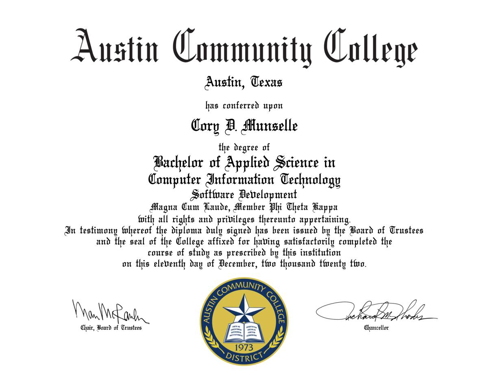

Formal Education
I'm a graduate of Austin Community College, graduating Magna cum laude with a Bachelors of Applied Science in Software Development.

I'm a graduate of Austin Community College, graduating Magna cum laude with a Bachelors of Applied Science in Software Development.
For my current work experience and skills, this Google Document contains my most up-to-date resume.

Projects that aren't impactful enough to put on my resume or LinkedIn are listed here, as they show off different skills that are harder to show on a single document.
I have written various technical documents, with my favorite being a guide to desktop computer parts. This was originally written for a school project, but I enjoyed writing it and found myself answering the same questions about computer building so the document is designed to address most questions.
I created a simple tool to scan for an element on an arbitrary url in C# using Puppeteer.
I served as a mentor in the ASCENDER for a student at Austin Community College while I was getting my degree. It was a very satisfying experience to help guide a new college student and help them figure out what they want to do. The link below is a picture of the ASCENDER graduate and me.
I spent two years at Austin Community College tutoring other college students in computer science and programming part-time. I also worked as a Teacher's Assistant for a semester, and have done private tutoring on multiple occasions.
As you probably already know at this point, my name is Cory. I am currently 31 years old and work as a software developer for IBM. I have a lot of opinions about very minor things and am happy to share them if you're interested.
If you wish to contact me and inquire further about my availability, please fill out the fields below or leave the message at the phone number listed below and I will get back to you as soon as I can.